Visibilidad y control
de tu material POP,
en tiempo real.
Metrix es el sistema operativo de los medios en tienda. Cada instalación, verificada con foto en vivo, GPS y hora, en un solo lugar para cadenas, marcas y agencias.
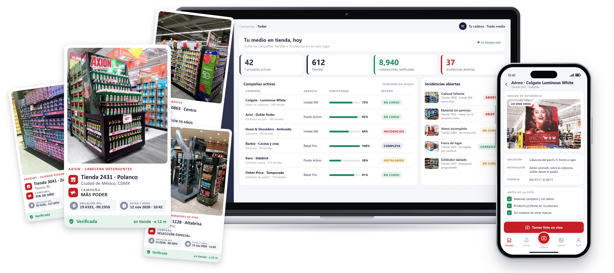
- 6,000+ tiendas
- con seguimiento cada quincena
- 1 millón+ evidencias
- fotográficas, verificadas cada mes
- 6 países
- México y 5 más
- 30+ años
- de experiencia en punto de venta
Operamos los medios en tienda de
Marcas que ejecutan y verifican sus campañas con Metrix
01Qué es Metrix
Metrix: el sistema operativo del POP en tienda.
Metrix nació en Fay Publicidad, con más de 30 años instalando material POP en las tiendas de México.
Con esa experiencia creamos algo único: un algoritmo propio que verifica cada evidencia fotográfica, y una plataforma para cada participante del punto de venta. Las cadenas operan sus espacios, las marcas ven la ejecución de sus campañas y las agencias organizan su trabajo, todos con la misma información verificada.
Cadenas, marcas y agencias: todo su negocio de material POP en un solo lugar.
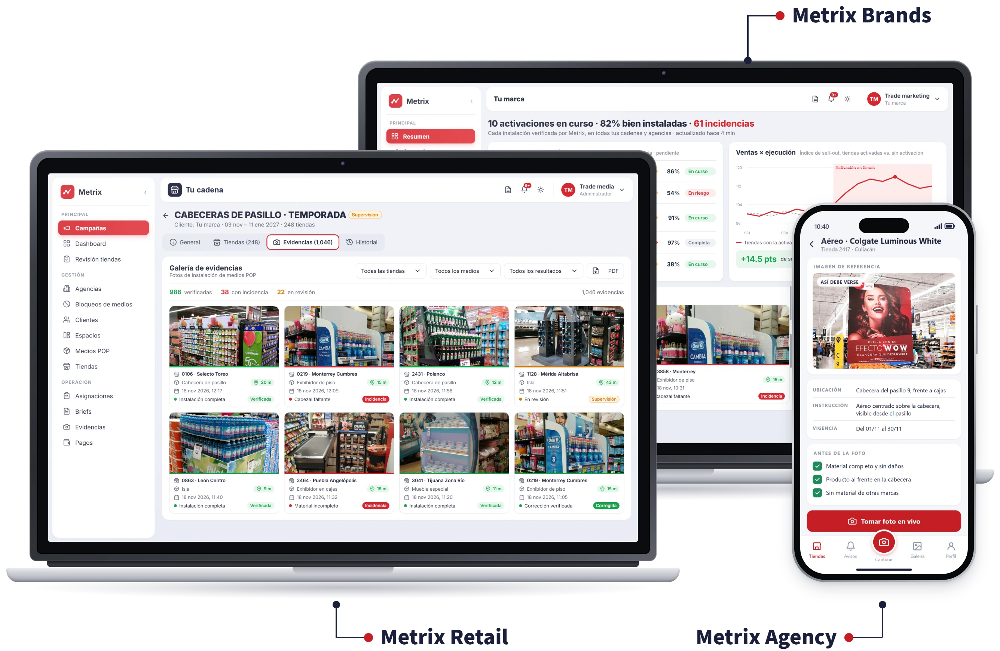
- 30+ años en punto de ventaInstalando material POP en las tiendas de México
- Desarrollo propioUn algoritmo diseñado por instaladores, único en México
- 100% de las evidencias, verificadasCada foto, antes de contar como instalada
- Una plataforma para cada unoCadenas, marcas y agencias, conectadas
Te mostramos Metrix en vivo, con ejemplos de tu categoría.
Agendar una demo02Para cadenas
Tus tiendas son un medio. Opéralo como tal.
Cada tienda tiene cientos de espacios valiosos para las marcas.
Pero es un negocio grande y complejo: sin un sistema operativo pierdes control y dinero, y tu equipo se va en trabajo manual en lugar de operar la tienda. Con Metrix Retail cada espacio queda registrado, cada instalación se verifica con foto en vivo y cada anunciante recibe su reporte, sin Excel ni revisiones a mano.
Ese sistema ya existe: Metrix Retail.
Las cadenas más grandes de México ya operan con él
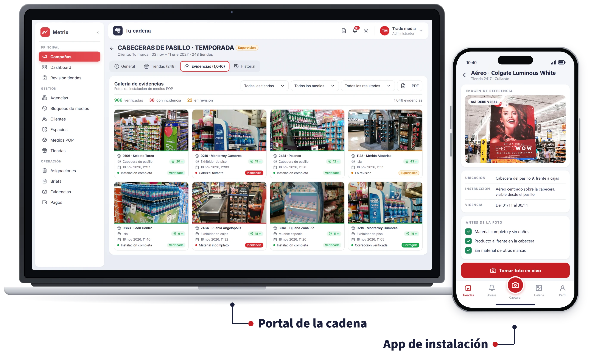
- Control total de tus medios en tiendaUn solo sistema y solo personal verificado en tus tiendas
- Cero trabajo manualRegistros, revisiones y reportes se generan solos
- Evidencia verificada para cada anuncianteCada instalación comprobada por Metrix Retail
- Más ingresos por cada espacioCada espacio identificado, vendido y facturado
Lo implementamos por ti y capacitamos
a todos los involucrados.
03Para marcas
En tienda, la ejecución es tu marca.
Hoy, la misma agencia que instala tu material es la que reporta su propio trabajo y te factura.
Sin una verificación independiente no sabes si tu marca se ejecutó como se prometió, y tu inversión y tu marca quedan en juego. Con Metrix Brands ves cada activación, tienda por tienda, con evidencia verificada, y cada incidencia llega a la agencia para corregirse mientras la campaña sigue activa.
Metrix Brands verifica cada instalación, en cada tienda.
Hoy la misma agencia
- Instala
- Reporta
- Factura
Nadie lo verifica
Con Metrix Brands
- Instala
- Metrix verifica
- Pagas lo verificado
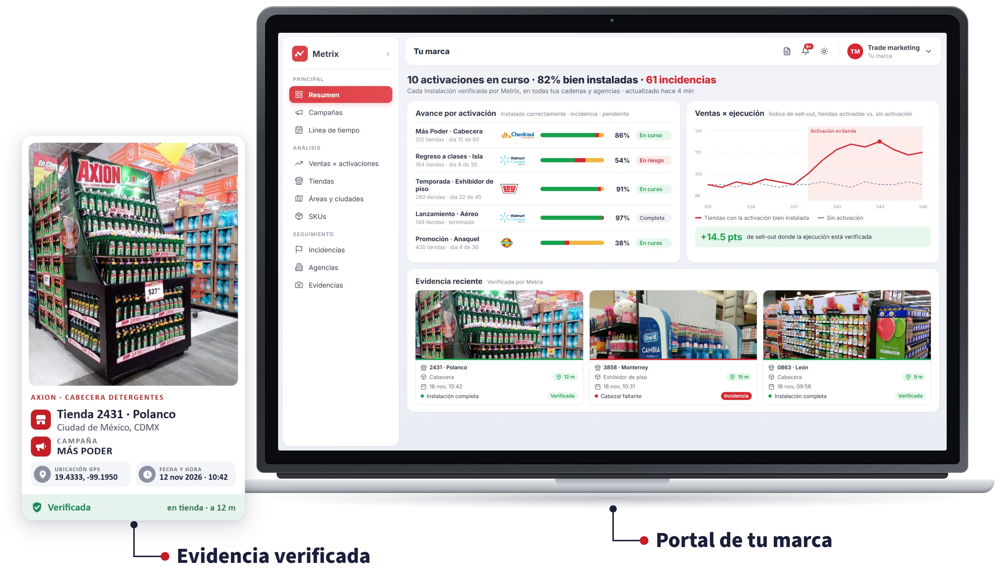
- Verificación independienteCada instalación, verificada por Metrix
- Todo en un solo lugarTodas tus cadenas y agencias, en tiempo real
- Actúa a tiempoCada incidencia, con seguimiento hasta corregirse
- Ejecución contra ventasEl impacto de cada activación, sin juntar datos a mano
Demo de 30 minutos con tus propias campañas.
Agendar una demo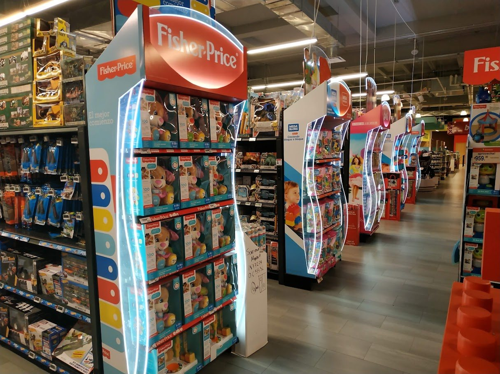
1 millón+
evidencias fotográficas, verificadas cada mes
En 6,000+ tiendas de México y 5 países más, cada quincena.
04Para agencias
Todas tus instalaciones, en un solo sistema.
Tus instaladores trabajan con la app de Metrix en cada tienda, en todas las cadenas y para todos tus clientes.
Tú ves toda tu operación en tu propio portal, hoy y en el historial, para optimizar tus rutas, tus equipos y tu logística. Cada instalador sabe qué instalar, mantener o retirar en cada tienda, toma la foto en vivo y la evidencia queda verificada al momento, lista para tus clientes.
El mismo sistema operativo con el que operan las cadenas más grandes del país.
- App de instalaciónPara tus instaladores, en cada tienda
- Portal de tu agenciaPara tu operación, hoy y en el historial
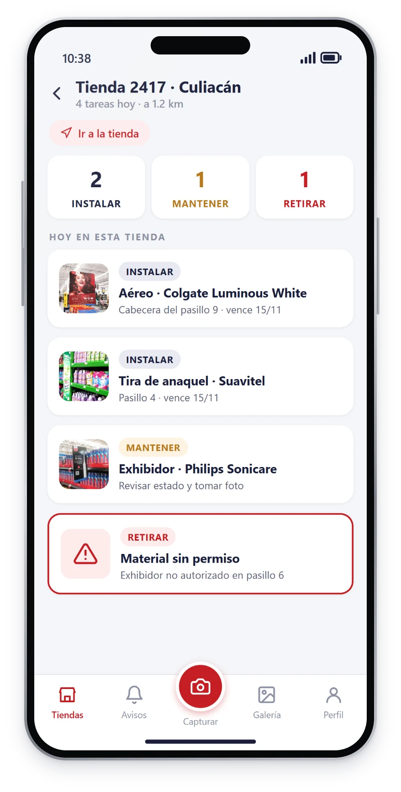
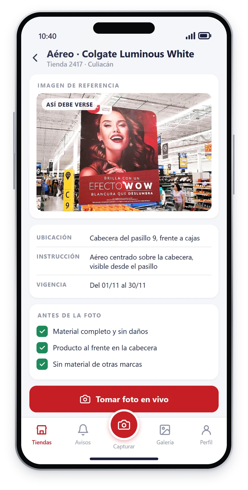
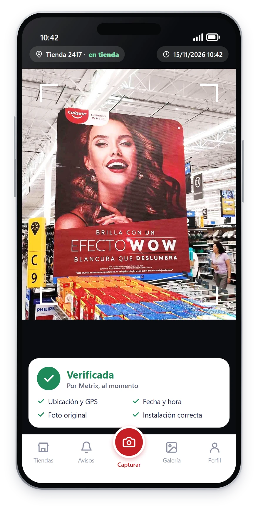
- Tareas claras por tiendaCada instalador sabe qué instalar, mantener o retirar
- Evidencia verificada al momentoCada foto, tomada en vivo y aprobada a la primera
- Reportes para tus clientesCada marca ve su avance, tienda por tienda
- Tu operación en un portalTodas tus instalaciones e historial, para optimizar tu logística
Demo de 30 minutos con tus propias
rutas y clientes.
05Verificación
Un algoritmo propio, imposible de engañar.
Lo diseñamos con 30 años de experiencia instalando en tienda.
Cada evidencia pasa por los candados de Metrix antes de contar como instalada, y el sistema aprende con cada foto que recibe: más de 1 millón cada mes. Revisa la ubicación, la fecha, el celular y el historial de cada tienda: una foto repetida, tomada en otro lugar o fuera de tiempo no pasa.
Detecta cada forma de maquillar la verdad.
- Fotos duplicadas
- Fotos de otra tienda
- Instalaciones fantasma
- Malas instalaciones
- Reportes a destiempo
- Material retirado después
Candados de verificación
- GPS satelitalNo se puede simular
- Ubicación y Wi‑FiEn la tienda correcta
- Fecha y horaEn el periodo de la campaña
- Datos de la foto y del celularOriginal y en vivo
- Historial de la tiendaContra cada foto anterior
Resultado 100% verificado
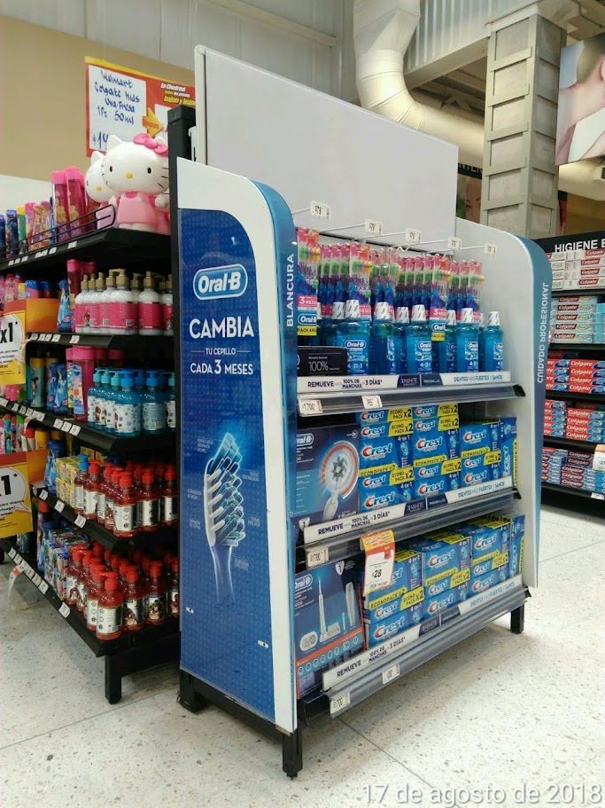
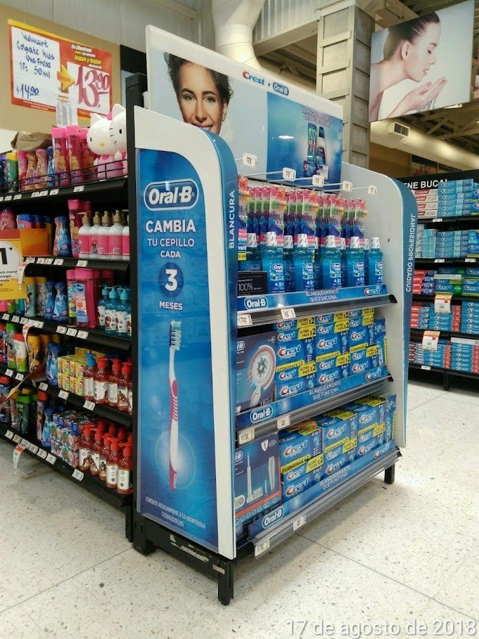
- Desarrollo propioDiseñado por instaladores, único en México
- 15,000+ campañasDe historial fotográfico detrás de cada revisión
- Siempre aprendiendoMás de 1 millón de fotos nuevas cada mes
- 100% verificadasCada evidencia, antes de contar como instalada
Te mostramos en vivo cómo se verifica cada foto.
Agendar una demo06Seguridad y privacidad
Tu información es solo tuya.
Trabajamos con cadenas, marcas y agencias que compiten entre sí.
Por eso la confidencialidad está en el centro de cómo construimos Metrix: cada cliente tiene su propia instancia, y solo entran las personas que tú autorizas. Tú decides qué ve cada usuario, cada acción queda registrada en la bitácora y tu información nunca pasa por modelos de IA públicos.
Tus campañas, tus evidencias, tus datos: solo tuyos.
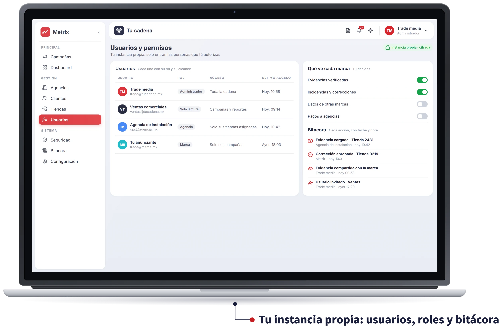
07Contacto
Agenda una demo de 30 minutos.
Te mostramos Metrix en vivo, con ejemplos de tu categoría, y te proponemos el siguiente paso: todo, o solo la parte que necesites.
- Nos cuentas tu operaciónTus tiendas, campañas y agencias
- Te mostramos Metrix en vivoCon ejemplos de tu categoría
- Te proponemos el siguiente pasoTodo, o solo la parte que necesites
contacto@metrix.com.mxCiudad de México · México y Centroamérica